① 빌더에서 파일 받기
올릴 파일을 먼저 만들어요.
빌더 왼쪽 위 페이지 내려받기를 눌러요
사진과 영상이 휴대폰에 맞게 저절로 줄어들어요. 영상이 있으면 몇 초쯤 기다려요.
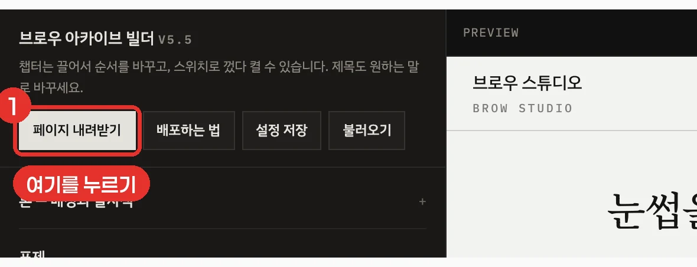
‘내려받기 완료’ 창이 뜨면 파일 이름을 확인해요
가게이름_페이지.zip 파일이 컴퓨터의 다운로드 폴더에 저장돼요.
압축을 풀지 마세요. 이 zip 파일을 그대로 올리면 돼요.
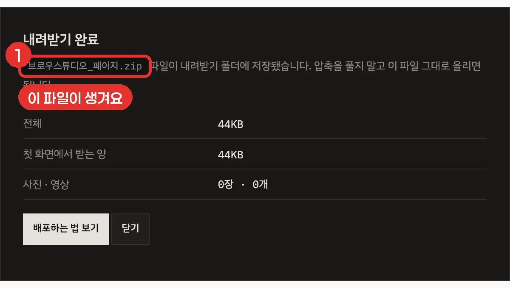
다운로드 폴더에 이름이 _페이지.zip으로 끝나는 파일이 생겨요.
② 클라우드플레어 가입하기 처음 한 번만
이미 가입했다면 ③ 올리기로 건너뛰세요.
가입 페이지를 열어요
크롬 주소창에 dash.cloudflare.com/sign-up 을 쓰고 엔터를 눌러요.
- 구글 계정이 있으면 맨 위 Continue with Google을 누르고, 내 구글 계정을 고르면 끝이에요. 이게 제일 쉬워요.
- 이메일로 가입하려면 Email 칸에 이메일, Password 칸에 새 비밀번호를 쓰고 맨 아래 파란 Sign up을 눌러요.
‘확인 중…’ 상자는 사람인지 확인하는 칸이에요. 저절로 체크되니 잠깐 기다리면 돼요.
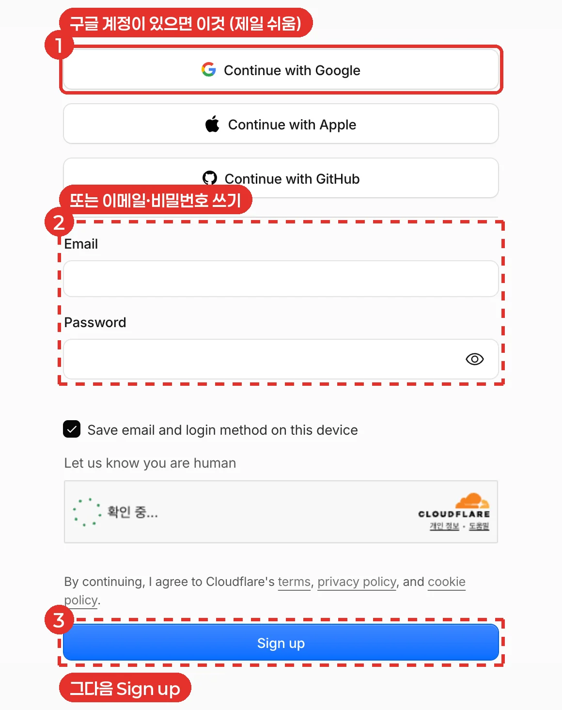
이메일로 가입했다면 메일함에서 인증해요
가입한 이메일로 클라우드플레어 메일이 와요. 메일을 열고 안에 있는 파란 버튼(인증 링크)을 눌러요.
구글로 가입했다면 이 단계는 없어요.
가입 직후 ‘무엇을 하러 왔나요?’ 같은 질문 화면이 나올 수도 있어요. 그럴 땐 아무거나 고르거나 Skip을 눌러 넘어가요.
메일이 안 보이면 스팸함(광고 메일함)을 확인해 보세요.
③ 페이지 올리기
로그인한 상태에서 dash.cloudflare.com 을 열고 시작해요.
왼쪽 메뉴에서 Compute → Workers & Pages를 눌러요
- 화면 왼쪽 메뉴의 Build 아래에서 Compute를 눌러요. 아래로 작은 메뉴가 펼쳐져요.
- 펼쳐진 메뉴 맨 위 Workers & Pages를 눌러요.
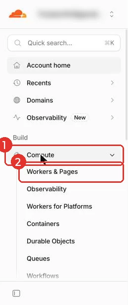
오른쪽 위 파란 Create application을 눌러요
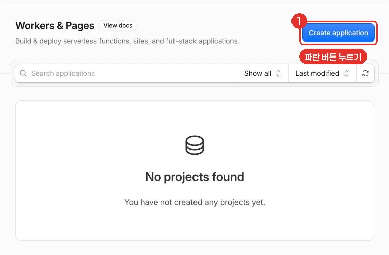
맨 아래 작은 글씨 Continue to Pages를 눌러요
큰 버튼 다섯 개는 누르지 마세요. 그 아래 회색 글줄 끝의 밑줄 친 글자예요. 작아서 놓치기 쉬워요.
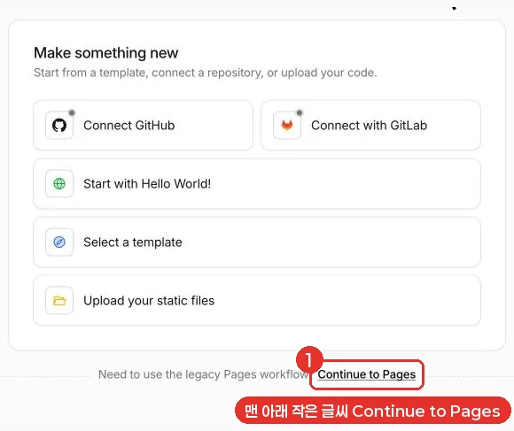
이 글자가 안 보이면 화면이 그림과 다를 때로 가세요.
아래 칸 Drag and drop your files 오른쪽 Get started를 눌러요
위 칸(Git)이 아니라 아래 칸이에요.
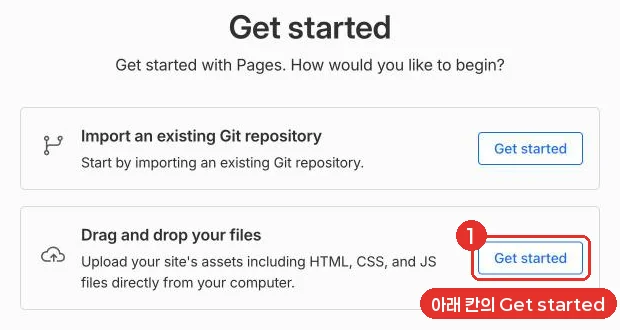
페이지 이름을 쓰고 Create project를 눌러요
- Project name 칸을 누르고 이름을 써요. 예: songbrow
- 칸 아래에 Your project will be deployed to 이름.pages.dev가 뜨면, 그게 내 페이지 주소예요.
- 오른쪽 파란 Create project를 눌러요.
이름 규칙: 영어 소문자, 숫자, 빼기표(-)만 쓸 수 있어요. 한글, 띄어쓰기, 대문자는 안 돼요.
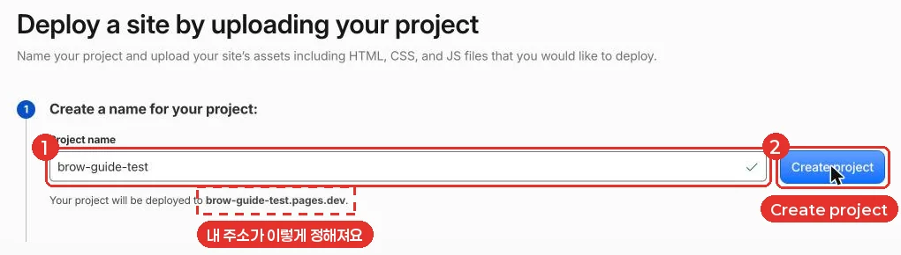
이 이름이 그대로 손님이 보는 주소가 돼요. 처음부터 가게 이름을 영어로 쓰는 게 좋아요.
zip 파일을 점선 상자에 끌어다 놓아요
- 컴퓨터의 다운로드 폴더를 열어요. (맥: Finder 왼쪽의 ‘다운로드’ / 윈도우: 파일 탐색기 왼쪽의 ‘다운로드’)
- ①에서 받은 _페이지.zip 파일을 마우스로 꾹 누른 채 끌어요.
- 클라우드플레어 화면의 점선 상자 위로 가져가서 손을 떼요.
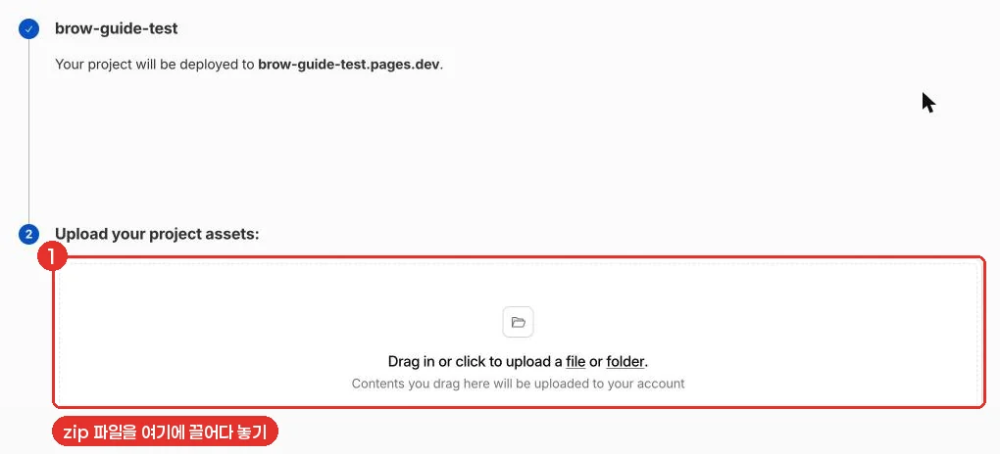
끌어다 놓기가 어렵다면: 점선 상자 안의 밑줄 친 file 글자를 눌러요 → 왼쪽에서 ‘다운로드’를 고르고 → zip 파일을 누른 다음 → 열기(또는 업로드)를 눌러요.
파일이 보이면 오른쪽 아래 Deploy site를 눌러요
zip 이름 아래에 index.html 같은 파일들이 줄줄이 보이면 잘 올라간 거예요. 페이지가 길게 내려가면 스크롤해서 Deploy site를 찾아요.
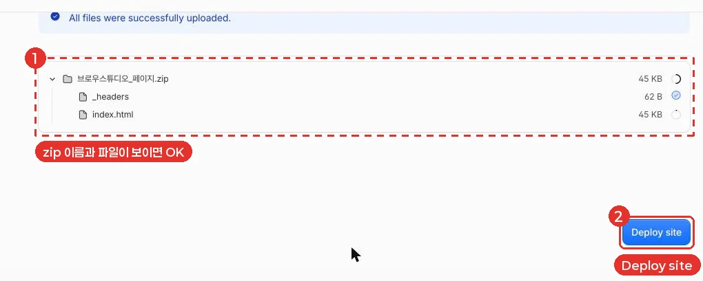
‘Success!’가 뜨면 완성이에요
파란 글씨 이름.pages.dev가 내 페이지 주소예요. 눌러서 잘 열리는지 확인해요.
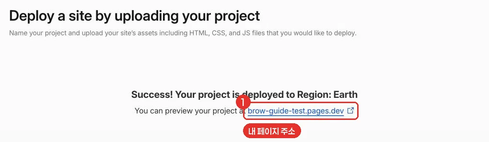
주소를 누르면 내가 만든 페이지가 열려요. 휴대폰으로도 같은 주소를 열어 보세요.
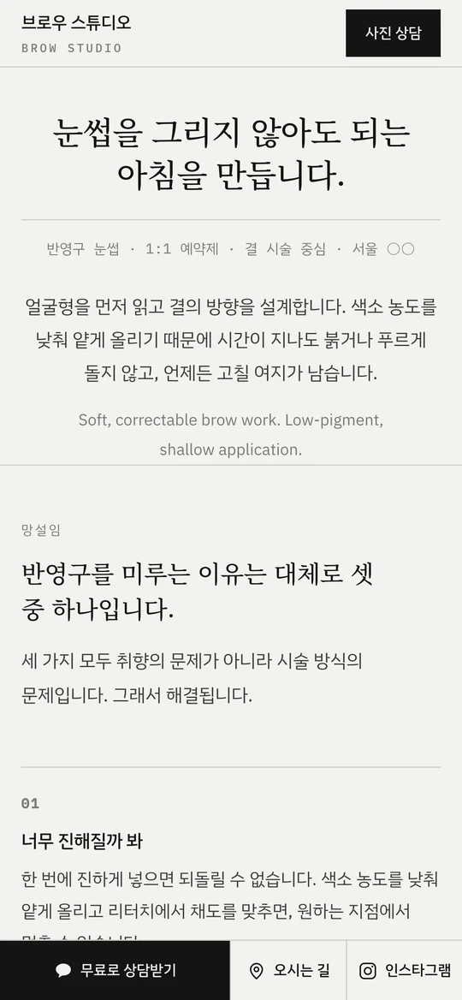
처음에는 주소가 열리기까지 1~2분 걸릴 수 있어요. 안 열리면 잠시 뒤 새로고침해 보세요.
④ 주소 쓰기
내 주소를 복사해서 손님이 보는 곳에 붙여 넣어요.
이런 곳에 붙여 넣어요
- 인스타그램: 프로필 편집 → 링크 추가
- 카카오톡 채널: 채널 소개나 웹사이트 칸
- 네이버 플레이스: 스마트플레이스 업체 정보의 홈페이지 칸
- 광고: 메타·네이버 광고의 ‘웹사이트 주소’ 칸
주소는 언제든 Workers & Pages 목록에서 내 프로젝트 이름 아래에서 다시 볼 수 있어요.
고친 페이지 다시 올리기
글이나 사진을 고친 뒤에는 이렇게 해요. 주소는 그대로예요.
빌더에서 고치고 다시 페이지 내려받기를 눌러요
새 zip 파일이 다운로드 폴더에 생겨요. 이름 끝에 (1), (2)가 붙을 수 있는데, 가장 최근 파일을 쓰면 돼요.
Compute → Workers & Pages에서 내 프로젝트 이름을 눌러요
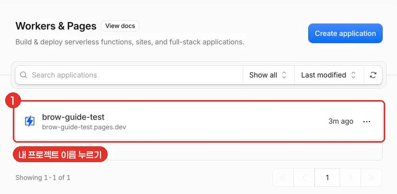
오른쪽 위 파란 Create deployment를 눌러요
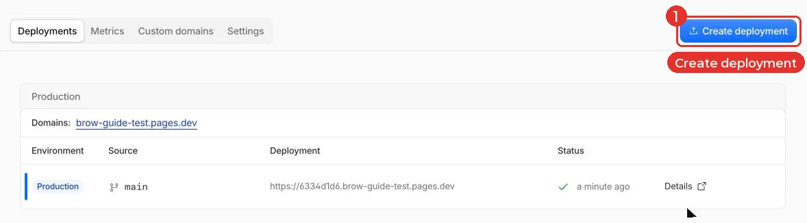
Production은 그대로 두고, 새 zip 파일을 점선 상자에 끌어다 놓아요
Preview를 고르면 손님이 보는 주소에 반영되지 않아요. 꼭 Production에 점이 찍혀 있는지 확인해요.
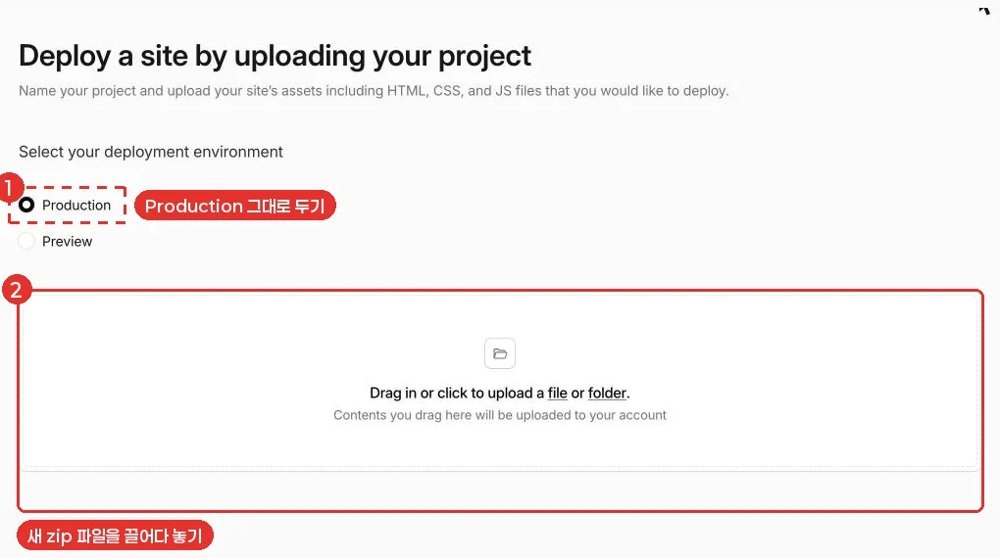
오른쪽 아래 Save and deploy를 눌러요
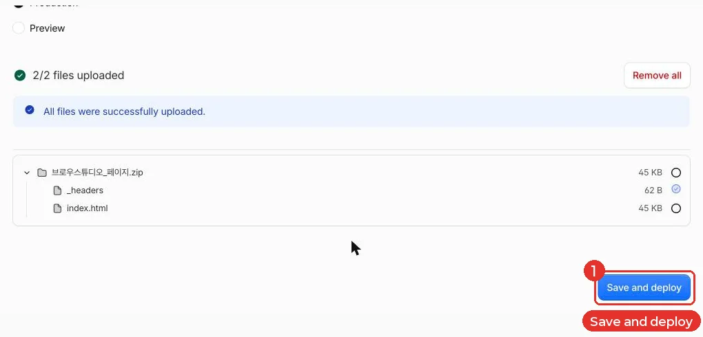
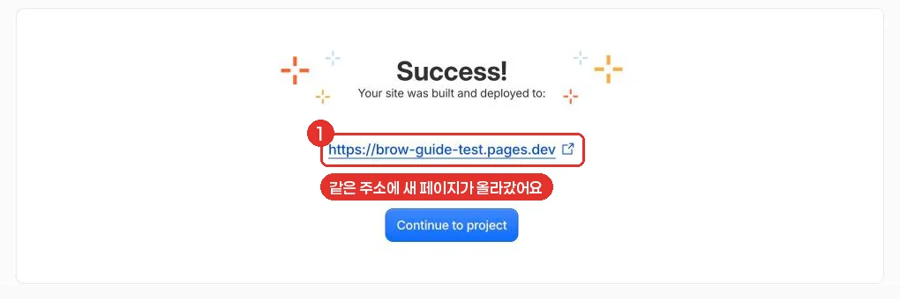
‘Success!’가 뜨고 같은 주소에 고친 페이지가 보여요. 예전 모습이 보이면 새로고침해요.
화면이 그림과 다를 때
클라우드플레어는 화면을 자주 바꿔요. 7번의 Continue to Pages가 안 보이면 이 방법으로 올려요.
Create application 다음 화면에서 Upload your static files를 눌러요
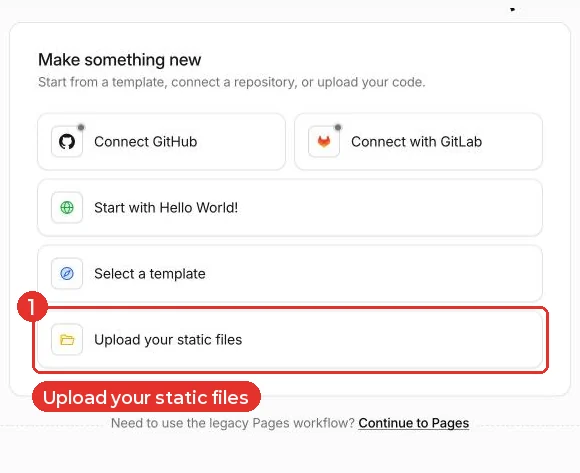
점선 상자에 zip 파일을 끌어다 놓아요
zip이 저절로 풀려서 파일 목록이 보여요.
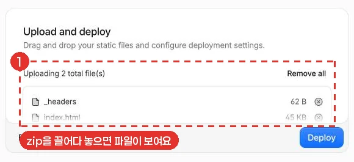
카드 안을 아래로 내려 Worker name에 이름을 쓰고 Deploy를 눌러요
이름 규칙은 9번과 같아요. 영어 소문자, 숫자, 빼기표(-)만 써요.
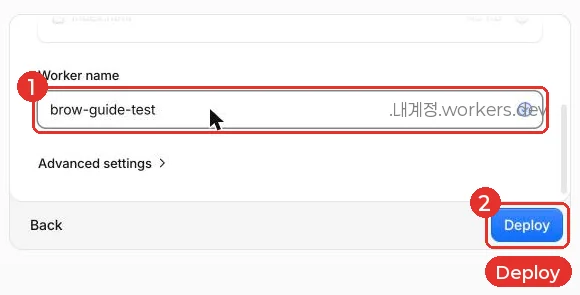
이 방법은 주소가 이름.내계정.workers.dev 모양이 돼요. ‘내계정’ 자리에는 가입한 이메일의 @ 앞부분이 들어가요. 고친 페이지를 다시 올릴 때는 프로젝트 화면 오른쪽 위 New deployment를 누르고 똑같이 끌어다 놓은 뒤 Deploy를 눌러요.